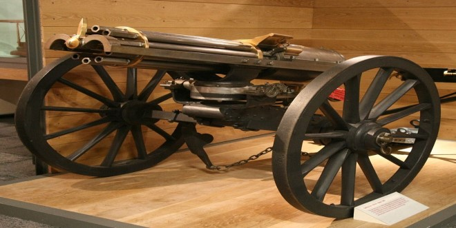
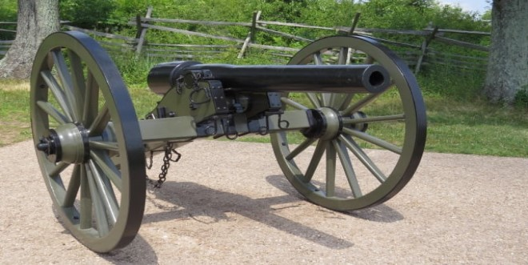
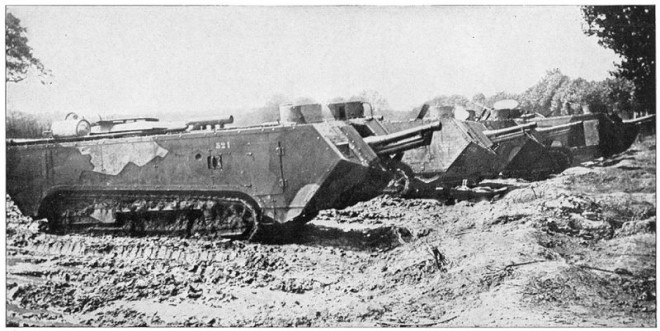
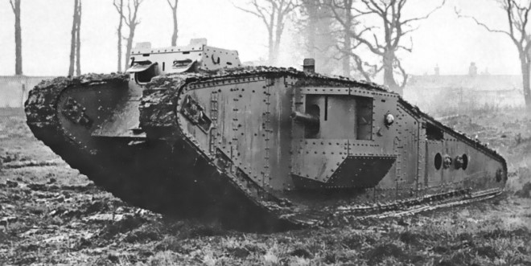
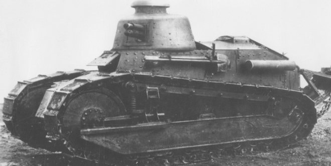
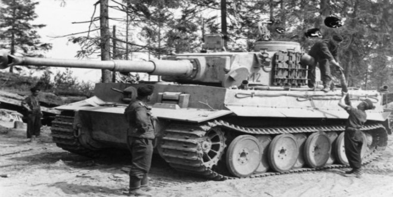
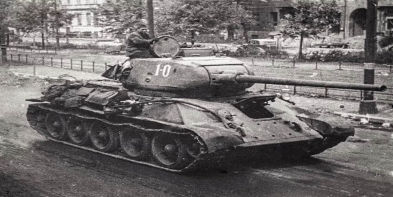
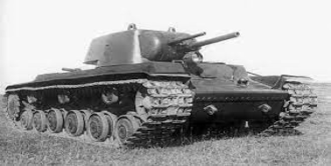
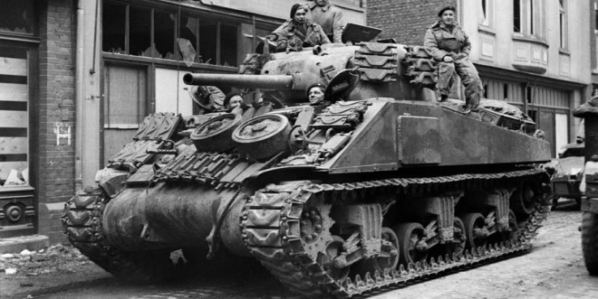
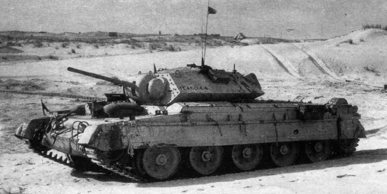

Kulomet Gatling
Gatlingův kulomet je jedna z prvních úspěšných realizací kulometu.
Jeho konstruktér Richard Jordan Gatling sestrojil první prototyp v roce 1861 a v roce
1862 získal na tuto zbraň patent.
Střelec jenom otáčel klikou a pomocníci přisypávali další střelivo. Kulomet Gatling
dosahoval kadence až 300 ran za minutu, záleželo to ovšem na rychlosti otáčení klikou.

Desetiliberní polní kanon Parrott
Jeho hlavním propagátorem, konstruktérem a výrobcem v Americe byl Robert
Parker Parrott
Parrottova děla měla hlavně už nikoli z bronzu, nýbrž z železné slitiny, a jejich
konstrukci zpevňovaly kruhové objímky kolem hlavní, díky nimž bylo možné použít i větší
prachové náplně.

St. Chamond
St. Chamond byl francouzský tank z 1. světové války. Byl konkurencí
prvního francouzského tanku Schneider CA1. Poprvé byl užitý v boji v roce 1917. V žádném
případě nedosahoval kvalit tehdejších britských tanků. Po válce byl vyměněn za mnohem
kvalitnější britské tanky Mark IV.

Mark IV
Mark IV byl pokračováním řady britských tanků (Mark I, II, III,)
užívaných v 1. světové válce. Výroba tohoto britského tanku byla zahájena v březnu 1917.
Boční střílny byly zmenšené, jejich tvar byl upraven. Došlo k zesílení čelního pancíře a
nádrže, která byla navíc přesunuta do zadní části tanku.

FT-17
Často zkráceně označovaný jako Renault FT či FT-17, byl francouzský lehký
tank první světové války. Byl prvním bojově nasazeným tankem v historii s výzbrojí
umístěnou v plně otočné věži, s řidičským v přední a motorovým prostorem v zadní části
korby
Zkonstruován byl v roce 1917.

Tiger
Byl německý těžký tank vyvinutý za druhé světové války, který byl od roku
1942 nasazován v Africe a Evropě, obvykle v nezávislých těžkých tankových praporech.
Po srpnu 1944 byla výroba Tigru I postupně ukončena ve prospěch tanku Tiger II.
Zatímco byl Tiger I ve své době označován za vynikající konstrukci, byl překombinován s
použitím drahých materiálů a výrobních metod náročných na práci.

T-34/85
Byl sovětský střední tank vyvinutý na přelomu 30. a 40. let 20. století,
který měl zásadní a trvalý dopad na konstrukci tanků. V době svého vzniku v roce 1940
byl podle amerického autora Stevena Zalogy nejlepším středním tankem na světě.
Jeho rychlopalný tankový kanón ráže 76,2 mm poskytoval podstatně vyšší palebnou sílu než
měly některé konstrukce jeho současníků.
Když se v roce 1941 poprvé objevil.

KV-1
Byla první a klasická varianta sovětského těžkého tanku KV. Byla vyvinuta
v roce 1939 jakožto jednověžová varianta (alternativa) dvouvěžových těžkých tanků SMK a
T-100, které byly vyvíjeny jako náhrada za nepovedené těžké tanky T-35.

M4 Sherman
Byl nejznámější americký tank ve druhé světové válce a krátce po ní.
Pojmenován byl britskými vojsky po americkém generálu Shermanovi. S téměř padesáti
tisíci vyrobenými kusy to byl druhý nejpočetnější tank války, předčil jej pouze ruský
T-34. Kromě nasazení v ozbrojených silách USA byl v rámci programu o půjčce a pronájmu
dodáván dalším mocnostem vzdorujícím Německu.

Mk.VI Crusader
Byl jeden z hlavních křizníkových tanků britské armády během druhé
světové války. Jeho vývoj probíhal roku 1939 souběžně s tankem Covenanter podle stejného
zadání u společnosti Nuffield. Korba tanku Crusader se vyznačovala velice nízkou
siluetou. Jednotlivé pancéřové pláty byly spojovány nýty. Věž tanku, která byla ovládána
hydraulicky, byla osazena kanónem ráže 40 mm.